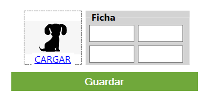

EDITAR MASCOTA
Editar un perfil

A continuación, te explicamos cómo editar un perfil de una mascota ya creada. Primero, debemos hacer clic en el botón "Editar", lo que nos mostrará los campos vacíos para poder modificarlos.

- En el primer campo vacío, puedes introducir un nuevo nombre para tu mascota.
- En el segundo campo, puedes seleccionar el tipo de animal de una lista desplegable o modificarlo si no está disponible en la lista.
- En el tercer campo, puedes modificar el peso de la mascota e incluso cambiar la unidad de medida.
- En el cuarto campo, puedes modificar la edad de la mascota e incluso cambiar la unidad de medida a meses.
- En el apartado "Cargar", puedes actualizar la foto de la mascota para que esté siempre actualizada y reconocible.
- Una vez hayas introducido todos los datos necesarios, haz clic en el botón "Guardar" para guardar los cambios.